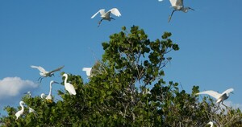
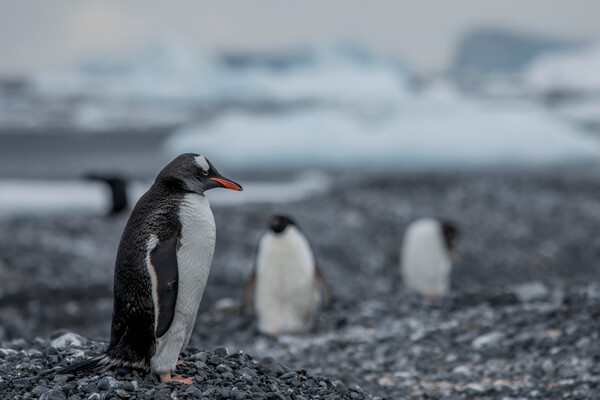
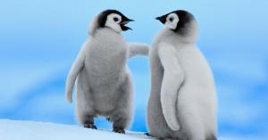
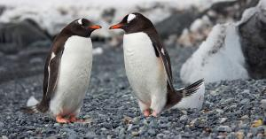
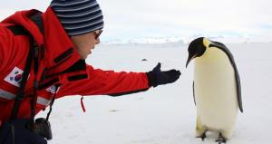

기후재앙 방지 실천방안 6가지

기후위기발 생태계 문제를 막기 위한 개인 실천 방안은 어떤 게 있을까.
전 세계 도시 기후위기 대응 연합체 C40, 에이럽(Arup) 등은 기후위기로 인한 생태계 재앙을 막기 위해 6가지 삶의 변화를 직접 실천하는 '점프' 캠페인에 참여할 시민들을 모집하고 있다. 이들이 내건 슬로건은 '시민은 무력하지 않다'이다.
녹색 식단 구성
'녹색 식단'이란 식물성으로 식단을 구성하고 음식물 쓰레기를 줄이고, 과식하지 않는 행동을 포괄하는 개념이다. 단체는 소고기, 돼지고기 등 붉은 육류가 온실가스 배출 주요 원인이며, 전 세계적으로 음식물 중 3분의1이 버려진다고 지적했다.
전자제품은 최소 7년 사용
사람들이 스마트폰, 노트북, PC, 태블릿, 스마트 워치 등을 이용하면서 일반적으로 2년마다 새로운 모델로 교체한다고 지적했다. 이어 점프 기간 동안 사용 중인 전자제품을 5~7년 정도 유지하자고 제안했다. 또 새로 사기보다는 수리, 중고 구매, 임대 등을 고려하라고 덧붙였다.
로 공유
으로 공유
로 공유

남극에서 새로운 펭귄 서식지 발견

펭귄도 여름 더위를 탈까요? (영상)

펭귄들은 어떻게 먹고 사나 들여다봤더니... 귀여운 비밀

8년 동안 남극에서 펭귄만 연구한 '펭덕'이 한국에 돌아왔다